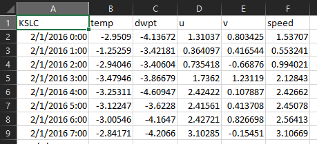
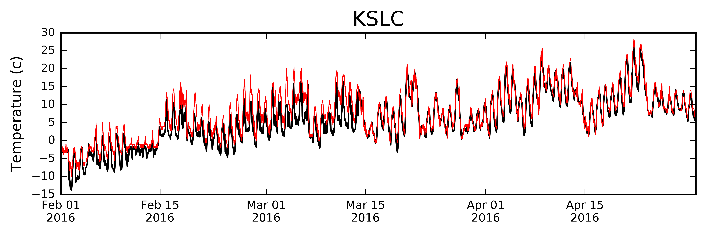
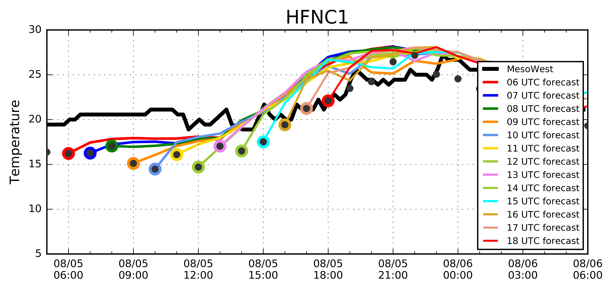
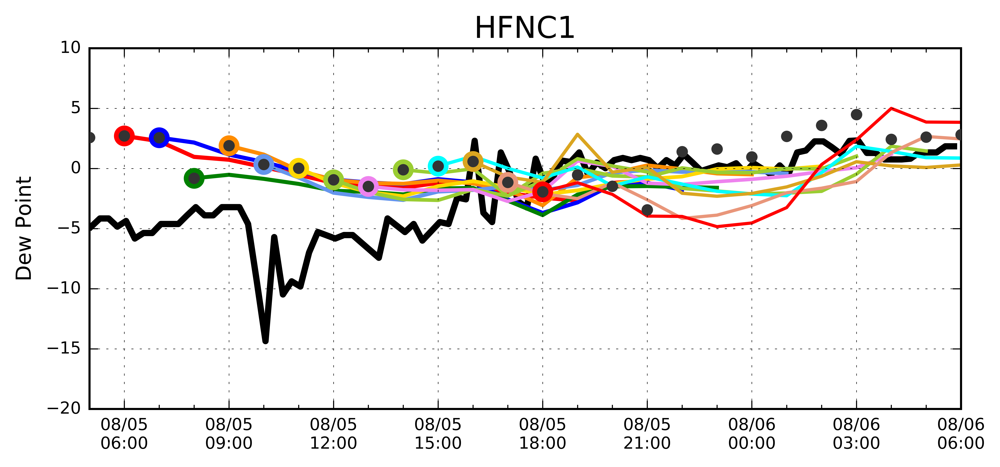
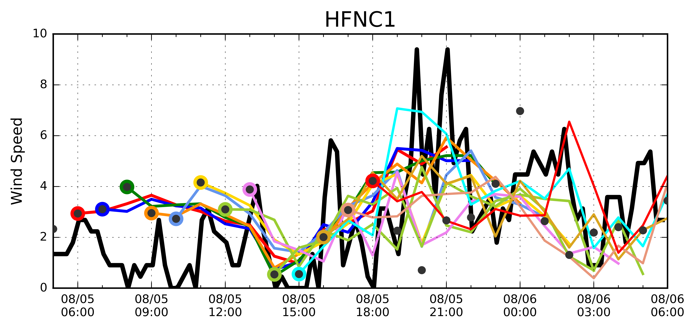
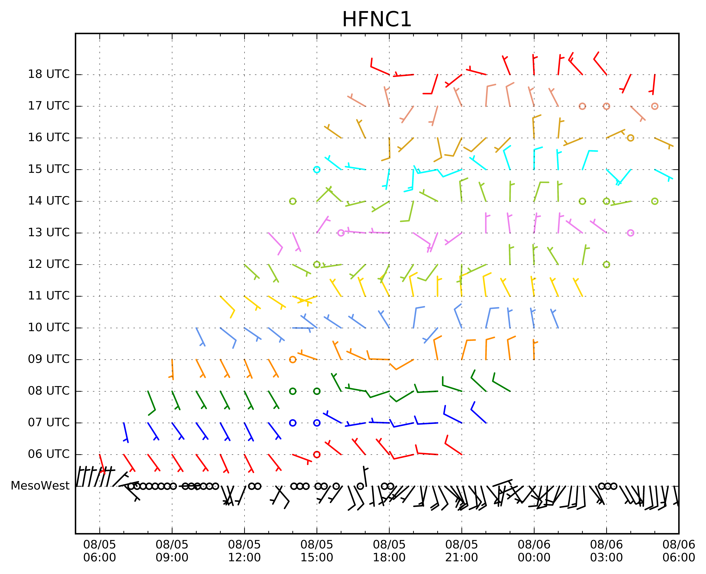

HRRR Verification
Products Examples
External Links
HRRR_Verification.py
 This python script reads the HRRR grib2 file, finds the nearest grid point for a MesoWest station, and saves some variables to a text file for later processing.
This python script reads the HRRR grib2 file, finds the nearest grid point for a MesoWest station, and saves some variables to a text file for later processing.
 Variables saves:
- 2-m Temperature
- 2-m Dew Point
- 10-m U wind
- 10-m V wind
Back to Top
HRRR Verification Method
MesoWest_vs_HRRR.py
This python script reads the HRRR verification text file created by HRRR_Verification.py, grabs the data from the MesoWest API for that station, and creates
a time series of temperature, dew point, and wind speed.

Back to Top
Product: HRRR Fires
.csv files for each station within 25 miles of the fire. Contains each hour HRRR value for the nearest point for forecast hours f00, f06, and f12 and the MesoWest observed value for the corresponding times (nearest observation within the top of the hour +/- 40 mins).
Product: HRRR Select Stations
.csv files for each selected station (currently KSLC, WBB, UKBKB, NAA, LGCUT, and EYSC). Contains each hour HRRR value for the nearest point for forecast hours f00, f06, and f12 and the MesoWest observed value for the corresponding times (nearest observation within the top of the hour +/- 40 mins).
HRRR and MesoWest values for Fires
You may request adding a station or two to my scripting by emailing me at brian.blaylock@utah.edu.
Back to Top
Examples
Looking at Temperature, Wind, and Dew Point for each model hour at a station near the 2016 Pioneer Fire




Back to Top